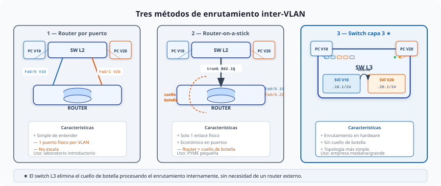
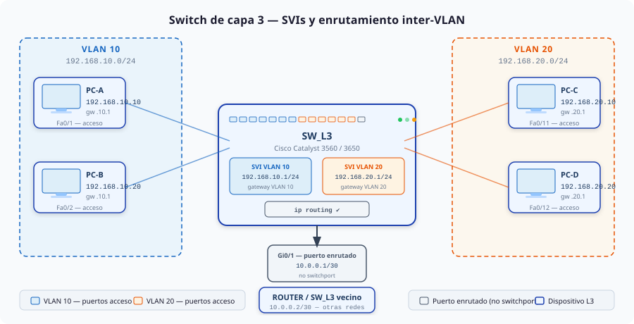

ENRUTAMIENTO ENTRE VLANs CON SWITCH DE CAPA 3¶
El enrutamiento entre VLANs es el mecanismo que permite que hosts de VLANs distintas se comuniquen entre sí. Ya conoces dos formas de conseguirlo: con un router físico y con router-on-a-stick (usa un único enlace con el switch con el puerto en modo trunk). En estos apuntes se introduce una tercera — el switch de capa 3 — que es la solución estándar en entornos empresariales.
1. Tres formas de enrutar entre VLANs¶
Las tres aproximaciones resuelven el mismo problema pero con compromisos distintos en cuanto a rendimiento, coste y escalabilidad.

Router con un puerto físico por VLAN¶
Un puerto independiente del router se conecta directamente a cada VLAN. El router enruta el tráfico entre sus interfaces igual que lo haría entre redes distintas.
Es la forma más intuitiva de entender el enrutamiento inter-VLAN porque hace visible que cada VLAN es, a todos los efectos, una red distinta. Sin embargo, consume un puerto del router y un puerto del switch por cada VLAN — algo que no escala más allá de dos o tres VLANs. Solo se usa en laboratorio para introducir el concepto.
Router con subinterfaces 802.1Q o Router-on-a-stick¶
Un único enlace trunk (802.1Q) conecta el switch con el router. El router crea una subinterfaz por cada VLAN, cada una con su propia dirección IP que actúa como puerta de enlace.
Resuelve el problema del consumo de puertos — un solo cable físico independientemente del número de VLANs. El problema es que todo el tráfico inter-VLAN debe atravesar ese enlace dos veces: sale del switch hacia el router y vuelve al switch. El router se convierte en cuello de botella cuando el volumen de tráfico entre VLANs es elevado. Es la solución habitual en PYME pequeña con presupuesto ajustado.
Switch de capa 3¶
El propio switch integra capacidad de enrutamiento. Se crean interfaces virtuales — una por VLAN — directamente en el switch. El tráfico inter-VLAN se procesa internamente en el hardware del switch, sin salir nunca hacia un dispositivo externo.
El resultado es un rendimiento muy superior al de router-on-a-stick y una topología más simple. Es la solución estándar en redes empresariales medianas y grandes.
Comparativa¶
| Router por puerto | Router-on-a-stick | Switch L3 | |
|---|---|---|---|
| Puertos físicos necesarios | 1 por VLAN | 1 (trunk) | 0 extra |
| Dónde se enruta | Router externo | Router externo | Dentro del switch |
| Cuello de botella | Sí | Sí | No |
| Coste | Bajo | Bajo | Mayor |
| Escala | No | Limitada | Sí |
| Entorno habitual | Laboratorio | PYME pequeña | Empresa mediana/grande |
2. El switch de capa 3¶
Un switch de capa 3 es un switch que, además de conmutar tramas Ethernet (capa 2), puede enrutar paquetes IP entre redes distintas (capa 3). Integra las funciones de switch y router en un mismo dispositivo.
La diferencia fundamental respecto a un switch de capa 2 es la capacidad de crear SVIs (Switched Virtual Interfaces) — interfaces lógicas asociadas a una VLAN — y asignarles una dirección IP. Cada SVI actúa como puerta de enlace de su VLAN.
En muchos switches L3, el enrutamiento se realiza en hardware (ASIC), lo que permite alcanzar velocidades muy altas. En routers, el reenvío puede depender del modelo y de su arquitectura (software/hardware), pero en laboratorio es útil recordar que el switch L3 suele enrutar “a velocidad de conmutación”.
En Packet Tracer los modelos disponibles son el Catalyst 3560 y el Catalyst 3650. Ambos soportan SVIs y enrutamiento IP entre VLANs.
3. Configuración básica: SVIs y enrutamiento inter-VLAN¶
Para los ejemplos de esta sección usaremos la siguiente topología:

El switch L3 (SW_L3) tiene dos VLANs: la VLAN 10 (192.168.10.0/24) con PC-A y PC-B, y la VLAN 20 (192.168.20.0/24) con PC-C y PC-D. Los hosts de VLANs distintas deben poder comunicarse entre sí sin necesidad de un router externo.
Paso 1 — Crear las VLANs¶
Las VLANs se crean igual que en un switch L2:
Paso 2 — Crear las SVIs¶
Una SVI (Switched Virtual Interface) es una interfaz lógica asociada a una VLAN. Actúa como puerta de enlace de los hosts de esa VLAN — es la IP que configurarás como gateway en cada PC.
Una SVI solo está activa (
up/up) si existe la VLAN correspondiente en la base de datos de VLANs y la VLAN está “presente” en el switch: al menos un puerto de acceso en esa VLAN estáconnectedo existe un trunk activo que transporte esa VLAN. Si la SVI aparece comodown/down, comprueba primero que la VLAN existe y que hay puertos/enlaces en estadoconnected.
Paso 3 — Activar el enrutamiento IP¶
Este comando habilita la función de enrutamiento en el switch. Sin él, el switch no reenvía paquetes entre SVIs aunque estén correctamente configuradas.
El comando ip routing es obligatorio
Los switches de capa 3 tienen el enrutamiento IP desactivado por defecto. Sin ip routing, el switch actúa como un switch L2 normal aunque tenga SVIs configuradas. Es el error más frecuente al configurar un switch L3 por primera vez.
Paso 4 — Configurar los puertos de acceso¶
Los puertos hacia los hosts se configuran en modo acceso, igual que en un switch L2:
Configuración de los hosts¶
Cada PC necesita una IP en su subred y como gateway la IP de la SVI correspondiente:
| Host | IP | Máscara | Gateway |
|---|---|---|---|
| PC-A | 192.168.10.10 |
255.255.255.0 |
192.168.10.1 |
| PC-B | 192.168.10.20 |
255.255.255.0 |
192.168.10.1 |
| PC-C | 192.168.20.10 |
255.255.255.0 |
192.168.20.1 |
| PC-D | 192.168.20.20 |
255.255.255.0 |
192.168.20.1 |
Verificación¶
Comprueba que las SVIs están activas:
Vlan10 is up, line protocol is up
Hardware is CPU Interface, address is 0001.c9e0.1234
Internet address is 192.168.10.1/24
Verifica que el switch tiene rutas hacia ambas VLANs:
Debería mostrar algo comoUsa show ip interface brief para ver el estado de todas las SVIs de un vistazo
down sin tener que consultarlas una a una.
Diagnóstico rápido (si no hay conectividad entre VLANs)¶
Checklist típico en Packet Tracer:
1) Gateway en los PCs: cada host debe tener como puerta de enlace la SVI de su VLAN (192.168.10.1 o 192.168.20.1).
2) VLANs creadas: VLAN 10 y VLAN 20 existen en el switch.
3) Puertos de acceso: los puertos hacia los PCs están en la VLAN correcta y en estado connected.
4) SVIs arriba: Vlan10 y Vlan20 están up/up y con la IP correcta.
5) ip routing activado: si falta, el switch no enruta entre SVIs.
Comandos útiles:
SW_L3# show vlan brief
SW_L3# show interfaces status
SW_L3# show ip interface brief
SW_L3# show ip route
Pruebas rápidas:
- Desde SW_L3, haz ping 192.168.10.10 y ping 192.168.20.10 para comprobar L2/L3 hacia cada VLAN.
- Desde un PC, usa ping a su gateway y luego al host de la otra VLAN. Si el ping al gateway falla, el problema suele estar en VLAN/puerto; si el gateway responde pero no hay inter-VLAN, suele ser ip routing.
Mala práctica: olvidar ip routing
! Incorrecto: SVIs configuradas pero sin activar el enrutamiento
SW_L3(config)# interface vlan 10
SW_L3(config-if)# ip address 192.168.10.1 255.255.255.0
SW_L3(config-if)# no shutdown
SW_L3(config)# interface vlan 20
SW_L3(config-if)# ip address 192.168.20.1 255.255.255.0
SW_L3(config-if)# no shutdown
! ping entre VLANs falla — el switch actúa como L2
4. Conexión con otros dispositivos de red¶
En una red real el switch L3 no está aislado — necesita comunicarse con otros dispositivos: otro switch L3, un router de distribución, o un firewall que da acceso a otras redes del campus o del edificio.
La forma habitual de conectar dos dispositivos de capa 3 es mediante un puerto enrutado — un puerto del switch que actúa como interfaz de red normal, con su propia IP, sin pertenecer a ninguna VLAN.
Puerto enrutado con no switchport¶
Por defecto, todos los puertos de un switch L3 son puertos de capa 2 (switchport). El comando no switchport convierte un puerto en interfaz de capa 3, permitiéndole tener una dirección IP propia.
Con /30 (255.255.255.252) se usa una subred de solo dos hosts — la práctica habitual para enlaces punto a punto entre dispositivos de red, donde no se necesitan más de dos IPs.
Una vez ejecutado
no switchport, el puerto desaparece de la tabla de VLANs y ya no puede configurarse como acceso ni trunk. Para revertirlo usaswitchport(sinno).
Ruta estática hacia las redes del vecino¶
Tras conectar físicamente los dos dispositivos, el switch L3 conoce la red del enlace (10.0.0.0/30) pero no las redes que hay detrás del vecino. Hay que añadir una ruta estática:
Esta ruta indica que para llegar a 172.16.0.0/16 (las redes del dispositivo vecino) el siguiente salto es 10.0.0.2.
Ejemplo: dos switches L3 en edificios distintos¶
El edificio A tiene SW_L3_A con las VLANs 10 y 20. El edificio B tiene SW_L3_B con las VLANs 30 y 40. Se conectan por un enlace punto a punto:
Los hosts de la VLAN 10 del edificio A pueden ahora comunicarse con los hosts de la VLAN 30 del edificio B, pasando por el enlace punto a punto entre los dos switches L3.
Mala práctica: configurar un puerto enrutado como trunk hacia otro switch L3
5. Comparativa: router-on-a-stick vs switch L3¶
| Característica | Router-on-a-stick | Switch L3 con SVIs |
|---|---|---|
| Hardware adicional | Router externo | No (integrado) |
| Dónde se enruta | Router (software) | Switch (hardware ASIC) |
| Rendimiento inter-VLAN | Limitado por el router | Wire speed |
| Cuello de botella | Sí — enlace trunk | No |
| Número de VLANs soportadas | Limitado por subinterfaces | Alto (depende del modelo) |
| Complejidad de configuración | Media | Similar o menor |
| Coste | Menor | Mayor |
| Cuándo elegirlo | PYME, poco tráfico inter-VLAN | Empresa, tráfico inter-VLAN alto |
Mala práctica: usar router-on-a-stick cuando ya hay un switch L3
! Incorrecto: mantener el router externo para enrutar entre VLANs
! cuando el switch ya tiene capacidad L3
Router(config)# interface Fa0/0.10
Router(config-subif)# encapsulation dot1Q 10
Router(config-subif)# ip address 192.168.10.1 255.255.255.0
! El switch L3 actúa como L2 puro, desaprovechando su hardware
6. Cuadro resumen — acciones y comandos¶
| Acción | Comandos (orden típico) |
|---|---|
| Crear VLANs | SW_L3(config)# vlan 10SW_L3(config-vlan)# name VLAN10SW_L3(config-vlan)# exitSW_L3(config)# vlan 20SW_L3(config-vlan)# name VLAN20SW_L3(config-vlan)# exit |
| Crear SVIs (gateways) | SW_L3(config)# interface vlan 10SW_L3(config-if)# ip address 192.168.10.1 255.255.255.0SW_L3(config-if)# no shutdownSW_L3(config-if)# exitSW_L3(config)# interface vlan 20SW_L3(config-if)# ip address 192.168.20.1 255.255.255.0SW_L3(config-if)# no shutdownSW_L3(config-if)# exit |
| Activar enrutamiento en el switch L3 | SW_L3(config)# ip routing |
| Configurar puertos de acceso para hosts | SW_L3(config)# interface range FastEthernet0/1 - 2SW_L3(config-if-range)# switchport mode accessSW_L3(config-if-range)# switchport access vlan 10SW_L3(config-if-range)# exitSW_L3(config)# interface range FastEthernet0/11 - 12SW_L3(config-if-range)# switchport mode accessSW_L3(config-if-range)# switchport access vlan 20SW_L3(config-if-range)# exit |
| Ver estado de una SVI | SW_L3# show interfaces vlan 10 |
| Ver todas las IPs/estados de interfaces y SVIs | SW_L3# show ip interface brief |
| Ver tabla de rutas | SW_L3# show ip route |
| Ver VLANs existentes | SW_L3# show vlan brief |
| Ver estado de puertos físicos | SW_L3# show interfaces status |
| Probar conectividad | SW_L3# ping 192.168.10.10SW_L3# ping 192.168.20.10 |
| Convertir un puerto enrutado (enlace L3) | SW_L3(config)# interface GigabitEthernet0/1SW_L3(config-if)# no switchportSW_L3(config-if)# ip address 10.0.0.1 255.255.255.252SW_L3(config-if)# ip address 10.0.0.2 255.255.255.252SW_L3(config-if)# no shutdownSW_L3(config-if)# exit |
| Revertir un puerto enrutado a switchport | SW_L3(config-if)# switchport |
| Añadir rutas estáticas | SW_L3(config)# ip route 172.16.0.0 255.255.0.0 10.0.0.2SW_L3_A(config)# ip route 192.168.30.0 255.255.255.0 10.0.0.2SW_L3_A(config)# ip route 192.168.40.0 255.255.255.0 10.0.0.2SW_L3_B(config)# ip route 192.168.10.0 255.255.255.0 10.0.0.1SW_L3_B(config)# ip route 192.168.20.0 255.255.255.0 10.0.0.1 |